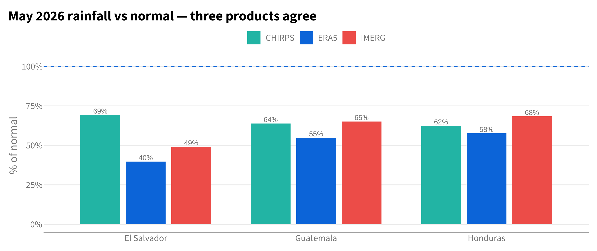

10 2026 Primera Situation & Priorities
10.1 Purpose
ROLAC missions to El Salvador, Honduras, and Guatemala (July 2026) are supporting country-level analysis of El Niño humanitarian impacts. This chapter is CHD’s contribution to the preliminary desk review: where is the 2026 primera season under stress, and which sub-national areas warrant priority attention. It reuses the anticipatory-action data pipeline but takes a whole-country, admin-1 view rather than the framework’s dry-corridor AOI.
NoteBottom line
The 2026 primera has started broadly dry across all three countries — three independent rainfall products agree (May rainfall roughly two-thirds of normal), and the seasonal forecast shows no relief through August. Because the rainfall deficit is region-wide, it does not by itself localize priorities; targeting comes from where the drought is already translating into agricultural stress and which areas are structurally most El Niño-sensitive. On that basis, seven admin-1 units already show material crop stress and are the immediate focus: Olancho, El Paraíso, Choluteca (Honduras); San Vicente, La Unión, Morazán (El Salvador); Zacapa (Guatemala).
10.2 Priority synthesis
The regional rainfall hazard is confirmed everywhere (below), so the tiers key on current agricultural impact and structural El Niño risk, not rainfall (which is uniformly poor):
- Act — ≥15% of crop area already in severe stress (FAO ASI), i.e. the drought is materially biting now.
- Watch — not yet materially stressed, but historically ≥15% drier in past El Niño years (statistically significant), so most likely to deteriorate as the El Niño develops.
- Monitor — dry like everywhere else, but no material impact yet and not highly sensitive.
| Priority: Act | ||||
| Materially stressed crop area, 2026 primera to date | ||||
| Country | Admin-1 | ASI (% crop area stressed) | Obs. rainfall pctile | El Niño anomaly |
|---|---|---|---|---|
| HND | Olancho | 52 | 4% | -4% |
| HND | El Paraiso | 37 | 2% | -8% |
| HND | Choluteca | 25 | 4% | -23% |
| SLV | San Vicente | 22 | 9% | -17% |
| SLV | La Unión | 18 | 28% | -31% |
| SLV | Morazán | 16 | 17% | -23% |
| GTM | Zacapa | 16 | 6% | -11% |
10.3 Current conditions: the 2026 primera so far
Observed rainfall (ERA5, May–June). Every admin-1 unit is in the driest third of its own 1981–2025 record; the map shows the empirical return period of the deficit.

Three independent products agree it is dry. ERA5 (reanalysis), IMERG (satellite), and CHIRPS (the FEWS NET standard) each put May 2026 well below normal in all three countries. They agree on the regional signal; they differ on severity (ERA5 is consistently the most severe), so we report the regional deficit with confidence but avoid over-precise per-unit “record” claims.

10.4 Agricultural impact (FAO ASI)
The rainfall deficit is region-wide, but agricultural stress is concentrated. FAO’s Agricultural Stress Index (share of crop area in severe stress, cumulative to late June) is well above normal in Honduras (11% vs 7%), near normal in El Salvador, and below normal in Guatemala — so despite dry rainfall, Guatemala’s crops are not (yet) unusually stressed.

10.5 El Niño context
A rapidly developing El Niño (ONI anomaly rose from −0.4 in January to +1.5 by June 2026) frames the season. Historically, El Niño depresses primera rainfall across the region — but not evenly. The map below shows each unit’s mean primera rainfall anomaly in past El Niño years (1981–2025); the eastern/southern dry corridor dries out most, and 83% of admin-1 units show a statistically significant El Niño drying signal.

10.6 Forecast outlook: does the rest of primera recover?
Combining observed May–June (ERA5) with the SEAS5 July-issuance forecast for July–August gives a complete primera estimate. The forecast offers essentially no relief: almost every unit is dry in both halves (bottom-left below). Only Izabal (Guatemala) has a near-normal forecast despite a dry start.

10.7 Caveats & data sources
- Product disagreement on severity. ERA5, IMERG, and CHIRPS agree the region is dry but differ on magnitude (ERA5 most severe; recent ERA5 months are provisional). Treat the regional signal as robust and per-unit “driest on record” claims as product-dependent.
- Cropland exposure is soft context. MODIS 500m cropland underestimates smallholder / hillside agriculture — e.g. Olancho (the most-stressed unit) reads only ~2% cropland in MODIS. It is therefore not used to filter units; FAO ASI (built on FAO’s own crop mask) is the impact signal.
- CHIRPS latency. CHIRPS final lags ~5 weeks, so it corroborates May only; ERA5 (to June) and IMERG (to July) carry the more current read.
- ASI is cumulative. We use the final June dekad (season-to-date), compared to the same dekad historically — not a multi-dekad mean.
- Resolution honesty. Forecast products are admin-1 (GTM/HND) / admin-0 (SLV); SEAS5’s ~36 km pixels do not support finer forecast breakdowns. Observational products (CHIRPS 5 km, ASI) can resolve admin-2.
10.7.1 Data provenance (pull scripts — shown, not executed here)
The heavy pulls run against the team database and Google Earth Engine outside this document; their outputs are the committed CSVs read above. Representative CHIRPS pull (rgee):
Code
# artefacts/mission_support_2026/_shared/pull_chirps_gee.R (abridged)
chirps <- ee$ImageCollection("UCSB-CHG/CHIRPS/DAILY")
fc <- ee$FeatureCollection("FAO/GAUL_SIMPLIFIED_500m/2015/level1")$
filter(ee$Filter$inList("ADM0_NAME", ee$List(list("Guatemala","Honduras","El Salvador"))))
# monthly sum per year -> zonal mean over GAUL admin units (via getInfo, no Drive scope needed)
ee_extract(x = year_image(yr, months), y = fc, fun = ee$Reducer$mean(), scale = 5566, via = "getInfo")SEAS5 / ERA5 / IMERG are read from the team Postgres database (cumulus::pg_con()), FAO ASI via cumulus::fao_asi_adm1_tabular(), and ONI via cumulus::load_oni().